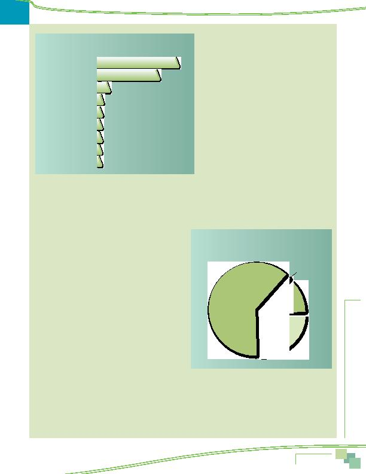

|

of reducing stress (17%) and using travel time productively (17%). One in ten noted that alternative modes offer companionship on the commute. use alternative modes help the environment, indicating awareness that use of alternative modes has an impact of environmental quality and suggesting that alternative mode users can take pleasure in contributing to cleaner air. Four percent noted reducing greenhouse gases and four percent said saving gas or energy, a benefit related to sustainability. dents named at least one benefit. Figure 9 displays these responses. 45% said it could reduce pollution or help the environment. as quickly, presumably reducing the cost to maintain or repair roads. Smaller percentages of respondents noted energy savings, reduced government costs, reducing road rage, and reducing accidents. or about the same as it was a year prior. As seen in Figure 10, the majority of respondents (62%) said their commute was about the same as a year ago. A quarter (25%) said their commute was more difficult and 12% said their commute was easier. One percent of respondents said they were not commuting in the Washington region a year ago, so a comparison was not provided. of Figure 11 presents reasons that respondents' commutes had worsened. The bottom section of the Figure shows the reasons that respondents' commutes had improved. congested. About two in ten respondents said the trip took more time and 14% said new construction along the route made the trip more difficult. About one in ten said the distance was longer (11%) or that the trains/buses were more crowded (8%). and 26% said the route they used was less congested or that the road had been improved. One in ten respondents (11%) said the commute was easier because construction along the route had ended. A similar share of respondents attributed their easier commute to a change they had made in their travel mode: started using bus/train (5%), started driving to work (4%), or started carpooling/ vanpooling to work (3%). |